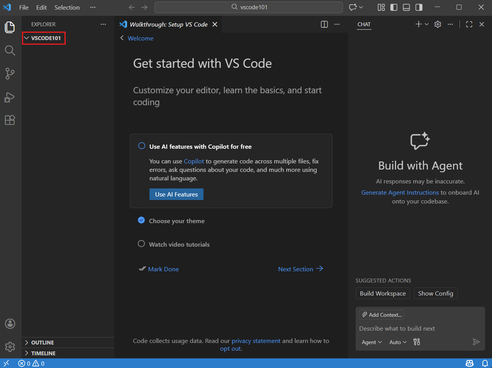
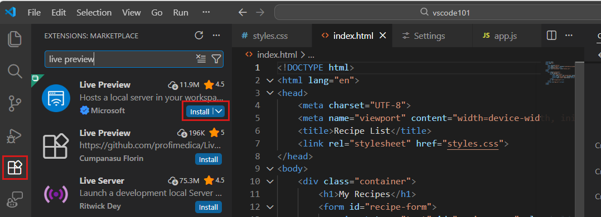
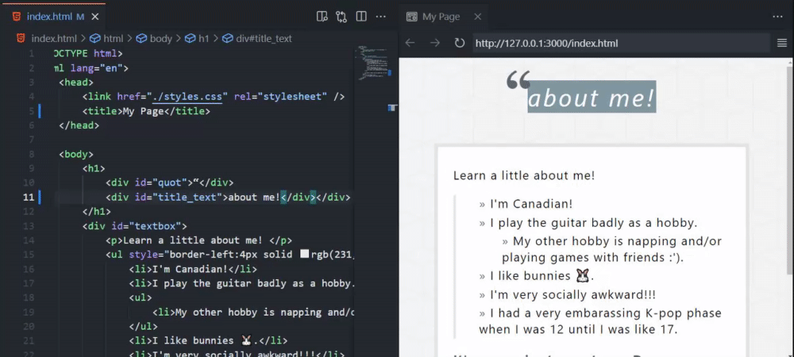

SEE IT / DO IT YOURSELF
A home for
your own code.
Seven steps to a folder you can find again, an HTML file and a preview of what you make.
Keep this guide on your phone or beside VS Code. Do the tasks on a Windows computer or Mac. No AI or Copilot is required.
BY THE END OF THIS GUIDE YOU CAN
- Open a real project folder in VS Code, the editor professional developers use
- Write a webpage in HTML and watch it update in Live Preview
- Read every tag in your page and say what it does
About the screenshots
Real screenshots from the official documentation. The images show the providers' example projects; your project names and content will differ. Open the tool alongside this guide.
One step at a time. Keep the real tool open beside this guide.
Checkmarks stay in this browser only. Nothing is submitted or reported.
STEP 01
Download VS Code.
- Visit code.visualstudio.com ↗.
- Choose the download for Windows or Mac.
- Open the downloaded file and install the program. On Mac, move Visual Studio Code into Applications if prompted.
- Open Visual Studio Code on your computer.
Check your screen: VS Code opens as a separate application, with a welcome page or an empty workspace.
Do I need to sign in or enable AI?
No. You can write HTML and use Live Preview without an AI account. Skip Copilot setup for this exercise. If you want to try AI later, the AI coding guide comes after these steps.
STEP 02
Create a folder on your Desktop.
Give it a name you will remember, such as my-future-world.
Windows
Go to your Desktop. Right-click an empty area → New → Folder. Type the name and press Enter.
Mac
Open Finder → Desktop. Choose File → New Folder. Type the name and press Return.
Check your screen: A new folder appears on your Desktop with the name you chose.
This folder is your project. Keep your code, images and sounds here. VS Code is the application you use to work with those files.
Continue →STEP 03
Open the whole folder.
- Return to VS Code.
- Choose File → Open Folder….
- Find Desktop and select your project folder.
- Choose Select Folder on Windows or Open on Mac. If asked about trust, confirm only when this is the folder you created and trust.

Check your screen: Your project folder appears in Explorer, the file panel on the left.
I only see a welcome page.
Choose View → Explorer. If your folder is still missing, use File → Open Folder… again.
STEP 04
Create index.html.
- Right-click your folder in Explorer → New File, or select the New File button shown below.
- Name the file
index.htmland open it. - Copy the code below and paste it into this empty file.
- Save with Ctrl+S on Windows or Cmd+S on Mac.

<!doctype html>
<html lang="en">
<head>
<meta charset="utf-8">
<meta name="viewport" content="width=device-width, initial-scale=1">
<title>My future world</title>
</head>
<body>
<h1>A place I know</h1>
<p>I notice the sound of rain at the bus stop.</p>
<details>
<summary>What if this changes in the future?</summary>
<p>What if we have to pay to hear the sounds of our city?</p>
</details>
</body>
</html>Open this guide on your computer to copy into VS Code. Copying on a phone puts the code on that phone.
WHAT DOES THIS CODE MEAN?
<!doctype html>Tells the browser: this is a modern webpage. It is always the first line. HTML intro ↗<html lang="en"> … </html>Wraps the whole page.langsays the language, so screen readers pronounce it correctly. Elements ↗<head> … </head>Information about the page that is not shown on it: the tab title, settings and, later, the link to your CSS.<title>My future world</title>The text in the browser tab.<body> … </body>Everything people can see on the page goes in here.<h1>A place I know</h1>The main heading.h1is the biggest;h2toh6get smaller. Headings ↗<p> … </p>A paragraph of text. Paragraphs ↗<details><summary> … </summary> … </details>A built-in reveal. The summary is always visible; click it and the rest opens. No JavaScript needed. details ↗
Most tags come in pairs: <p> opens, </p> closes (note the slash). Everything in between is the content.
TRY IT: CHANGE ONE THING
- Predict, then change: replace the words inside
<h1>with a place you know. Save with Ctrl + S and look at Live Preview. - Add a paragraph: copy the whole
<p> … </p>line, paste it underneath and write a new sentence. - Stretch: add a smaller heading with
<h2> … </h2>above the question.
LEARN IT PROPERLY ON W3SCHOOLSHTML tutorial ↗HTML elements ↗Try it Yourself editor ↗
Check your screen: index.html appears inside your project folder, with the code in the editor.
Desktop
└── my-future-world
└── index.htmlMy file is called index.html.txt.
Right-click it in VS Code → Rename. Change the full name to index.html. It must end in .html.
STEP 05
Install Live Preview.
- Open Extensions from the icons on the left, or choose View → Extensions.
- Search for Live Preview.
- Select the extension published by Microsoft. Click Install.

Open the official Microsoft Live Preview page ↗
Check your screen: Live Preview is installed and enabled.
Several extensions have similar names.
Choose Live Preview published by Microsoft. Its exact identifier is ms-vscode.live-server.
STEP 06
Open your page in Live Preview.
- Open
index.htmlin the editor. - Right-click the HTML file and choose the Live Preview Show Preview option, or select the preview button at the top right.
- Find the heading A place I know in the preview.
- Select What if this changes in the future? to reveal the text below it.

Watch the real action: open Live Preview

Recording from Microsoft. Close this section to hide the animation.
Watch the real action: edit code and see it update

The example code belongs to Microsoft. Original recording and documentation ↗.
Check your screen: A heading, a paragraph and a clickable line appear. Open the actual result of the starter code ↗.
The preview is empty or missing.
Check that your file contains the code, is saved and ends in .html. Check that Microsoft Live Preview is enabled. Reopen the whole project folder if you only opened a single file.
STEP 07
Make the example yours.
- Replace the text between
<h1>and</h1>with a place or situation you know. - Replace the rain sentence with one detail you have noticed yourself.
- Replace the future question and the revealed text with your own idea.
- Save. Check that your changes appear in Live Preview.
Check your screen: The page uses your own words, the text can be revealed, and you know where the file is saved.
An ordinary observation is enough. You decide what you share. This is a starting exercise, not a completed final assessment.
Continue →TAKE IT FORWARD
You have somewhere to begin.
Use the checkpoints above to see what is ready and where you need help.
Next time: open VS Code → File → Open Folder… → choose the same Desktop folder. Open index.html and start Live Preview again.
Next, give your page colour with style.css: Lab 1’s CSS & colour studio shows how. Keep images in the same folder too. Keep everything inside your project folder. Live Preview shows your page locally; it does not publish it online.
NEXT STEP / OPTIONAL
Code with AI. Stay the author.
Your folder and Live Preview are ready. The next guide shows how to use an AI assistant in VS Code: write a clear prompt, read every change, test it and log what you kept.
Open the AI coding guide →Continue with JavaScript.
Write and test your code in VS Code, then use it in Construct.
VS Code → Construct: step by step →